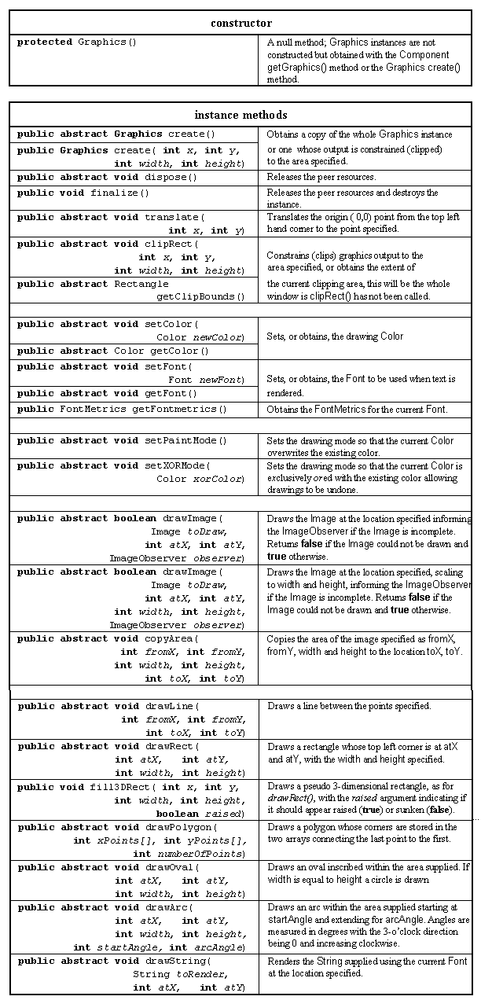
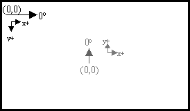
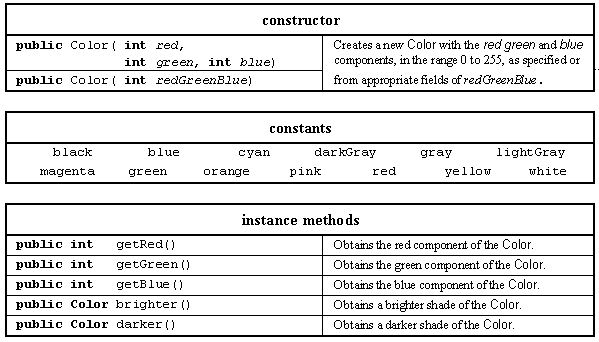
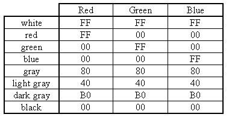
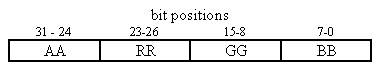

The implementation of the Tuttle class will require a detailed consideration of the Graphics class and the ways in which it can be used for drawing on component windows. The Graphics class was briefly introduced in Chapter 2 where it was used to produce the drawings on the Doodle's window. It was also used in Chapter 3 when text had to be rendered onto the windows of the PostIt application and the DateBoxes drawn in the DatePanel class.
Whenever graphical, as opposed to textual, output has to be produced an instance of the Graphics class is required. It encapsulates a large amount of information including: which object to draw on, what its dimensions are, what drawing color is to be used, which font is to be used for rendering, and so on. If a Graphics context were not used then much of this information would have to be passed as arguments to every drawing method. For example, the call of the method to draw a line on the Doodle's window in Chapter 2 was as follows.
contetxt.drawLine( lastX, lastY, currentX, currentY);
The four arguments supplied to the call are the minimum information required to draw a line, where to start and where to end. If a context were not used then the call might have to be specified as follows.
drawLine( whichWindowToDrawOn, whichColorToDrawIn, whichBackgroundColorToUse, whatLimitsToDrawWithin, whatDrawingModeToUse, whatOriginToUse, lastX, lastY, currentX, currentY);
Thus the use of a Graphics instance simplifies calls of drawing methods although the necessity of using it may initially suggest that it might make their use more complex. The major resources of the Graphics class are given in Table 4.2.

Table 4.2 Major resources of the Graphics class.
The drawRect(), drawPolygon(), drawOval() and drawArc() methods are accompanied by equivalent fillRect(), fillPolygon(), fillOval() and fillArc() methods which differ only by filling the area with the current drawing color.
The Graphics class is an abstract class, and many of its methods are abstract, and it is extended and implemented by the peer windowing system. This is necessary in order that the same Java methods can be used to produce output upon a number of different operating and windowing systems. Many of the methods in the table will be used when the detailed construction of the Tuttle class is considered below.
A Graphics frame of reference has its default origin (0,0) at the top left of the drawing area, with x values increasing to the right and y values downwards. Direction 0 points to the 3-o'clock position, directly to the right of the screen, and directions increase in a clockwise manner. The origin can be moved to any location in the drawing area by using the transform() method but the zero direction cannot be changed. This frame of reference differs from that used by the Tuttle class which will cause some complications in the Tuttle's implementation, as will be described below. The two frames of reference are illustrated in Figure 4.3.

Figure 4.3 The Graphics' frame of
reference (black) and
the Tuttle's frame of reference
(grey).
The use of the Graphics class requires some knowledge of the Color class whose major resources are given in Table 4.3.

Table 4.3 Major resources of the Color
class.
A color within a computer system can be represented by its red, green and blue (RGB) components. If the red, green or blue values are set to zero then black is indicated, if all components are set to their maximum value then white is specified. Different values for the different components specify different colors; some examples are given in Table 4.4.

Table 4.4 Common RGB color values, in hexadecimal.
The first Color constructor will create a color from the three values supplied, the second constructor contains the three components in the lower 24 bits of its 32 bit integer argument, as shown in Figure 4.4. This also explains why the RGB values are limited to eight bit values between 0 and 255. This color model will allow a total of 224, or over 65 million, different colors to be specified which, as this is more colors than a human eye can resolve, should be sufficient. The Color class also supplies a number of pre-declared color constants as shown in the table. The final two methods, lighter() and darker(), are supplied to facilitate the pseudo three dimensional bordering of an area.

Figure 4.4 The RGB components of
a 32 bit color value.